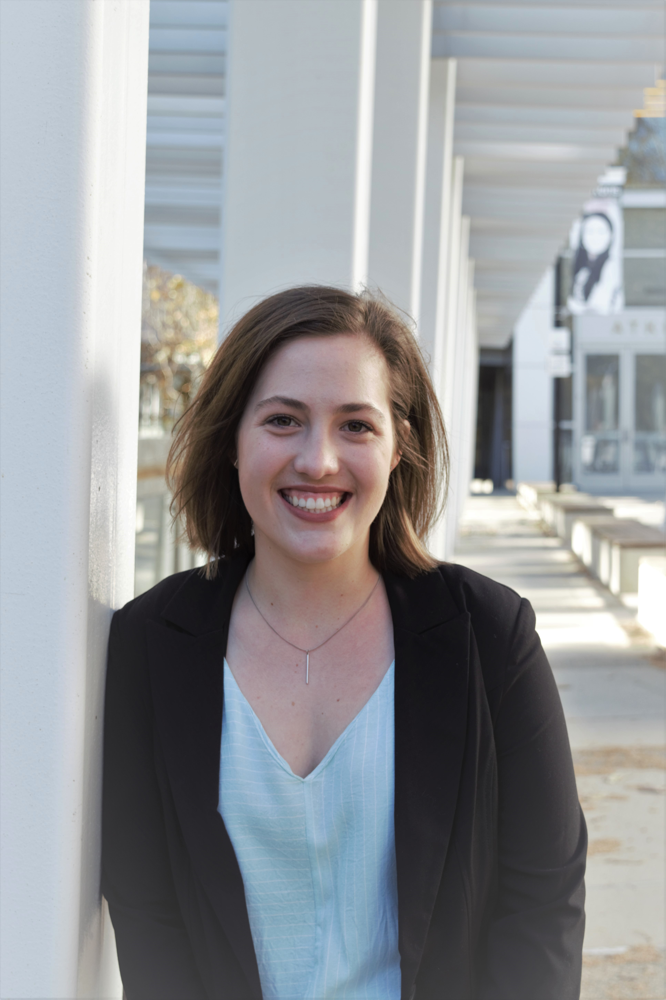
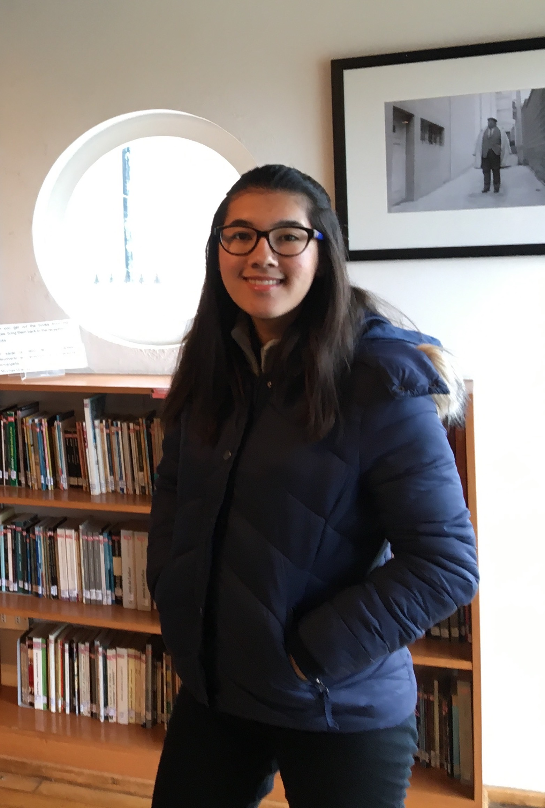
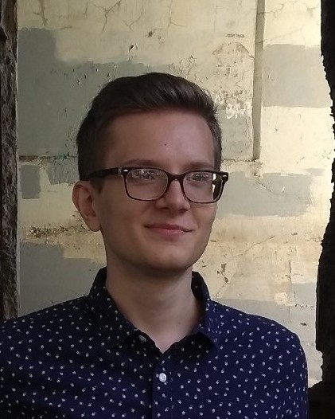
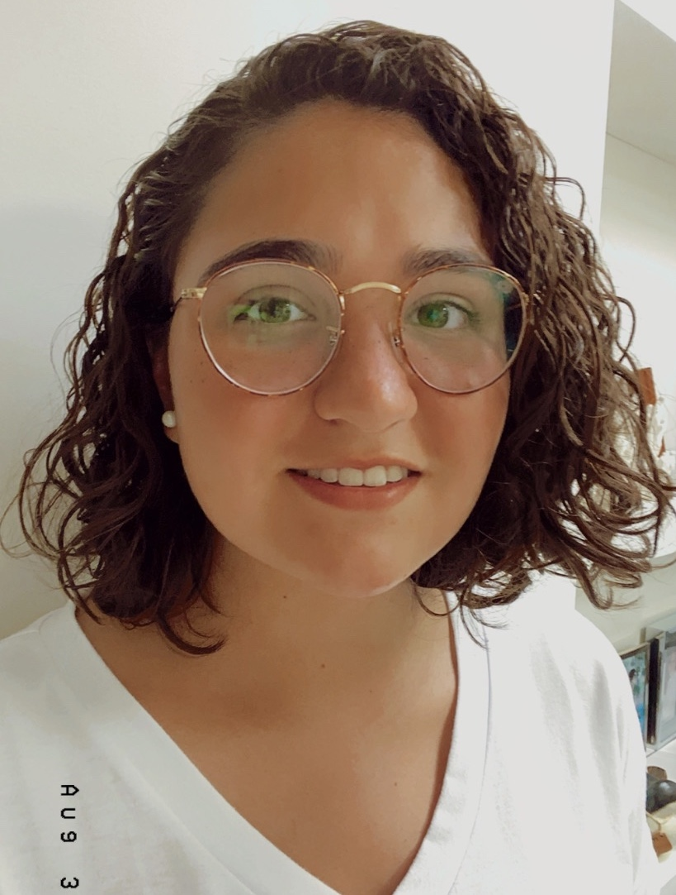
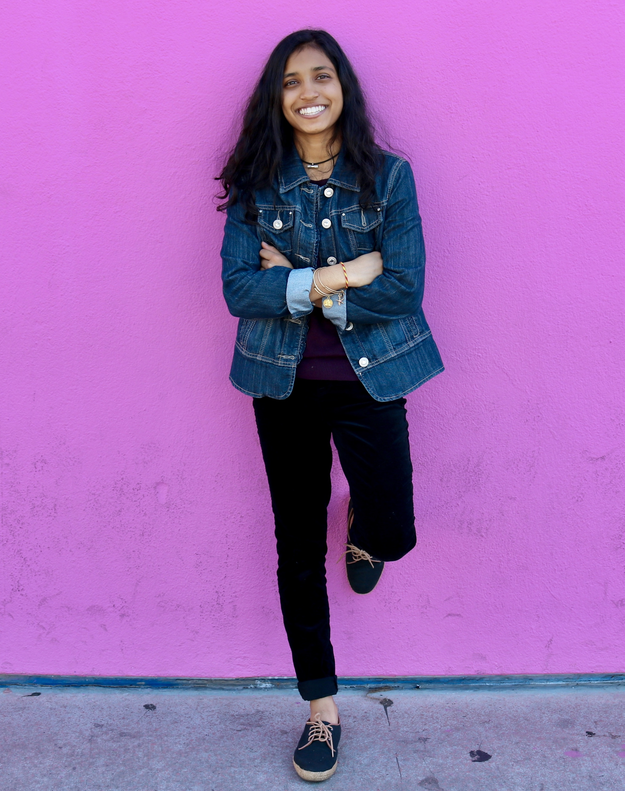
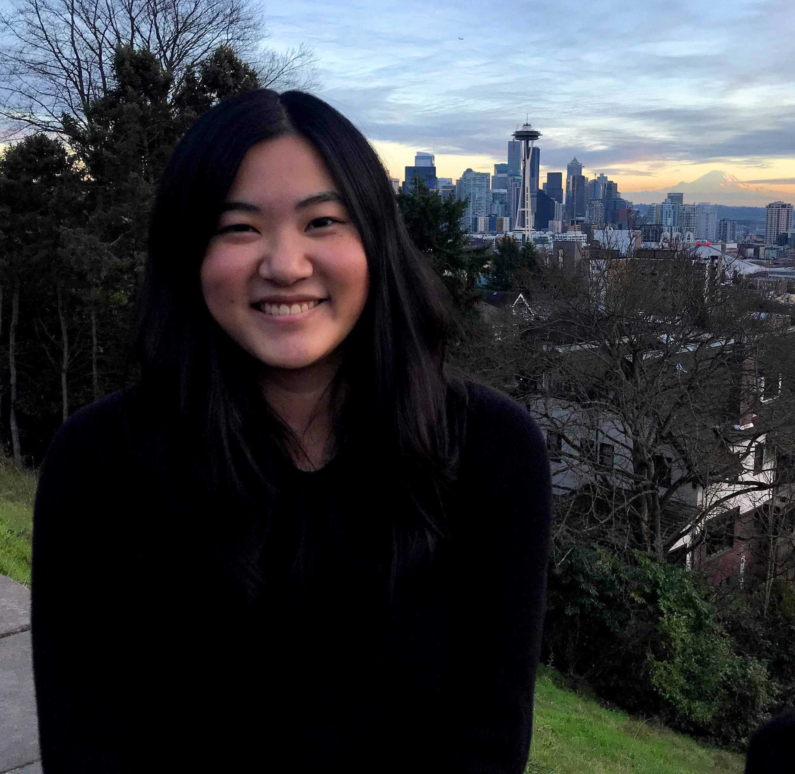
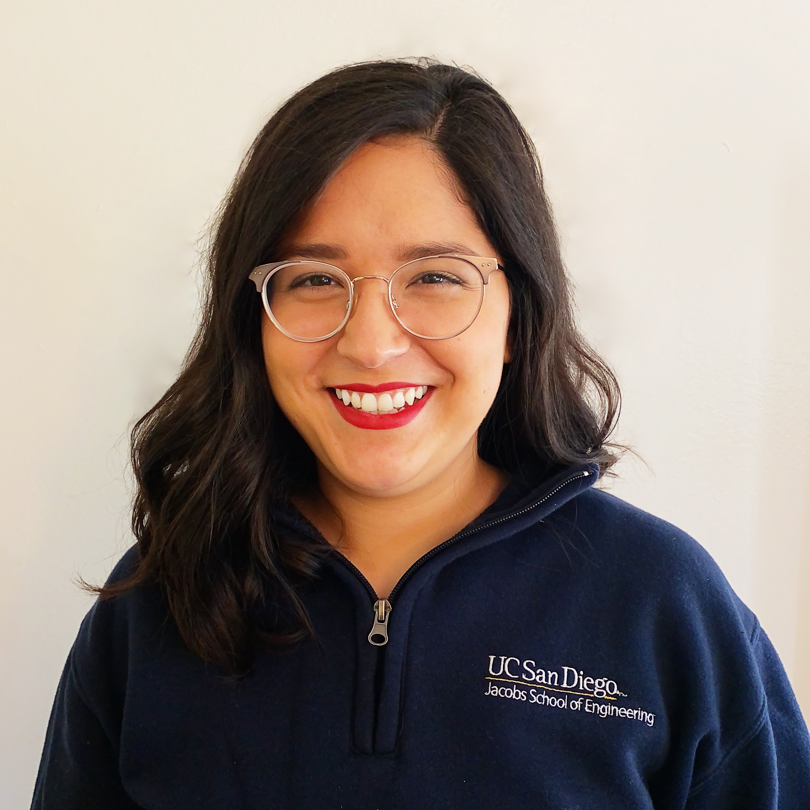
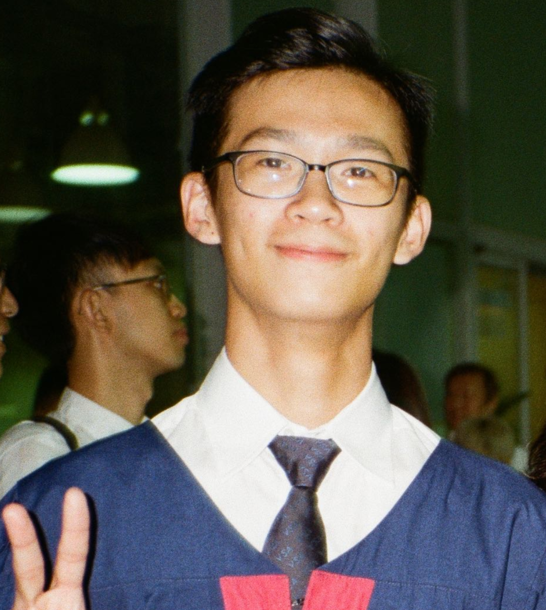
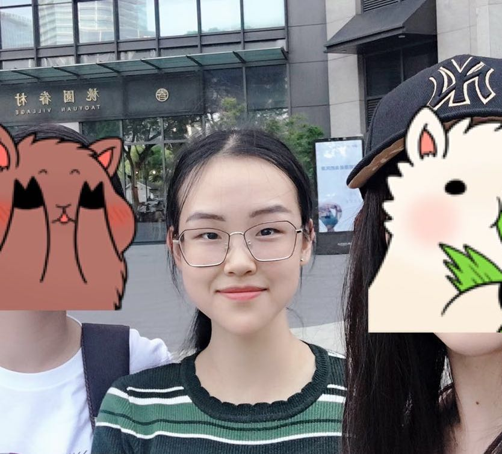

Class of 2021
Major: Bioengineering: BioSystems
Minor: Global Health
I joined EWH as a freshman looking for practical engineering skills like CAD and project management. During that
first year, I did learn a lot of new skills, but I also fell in love with the people in the org, the challenges our
project teams had to overcome, and the focus on global health. EWH is a space that has fueled my interest in learning
more about health disparities and how medical devices can be developed to help lessen these disparities.
My positive experiences have kept me coming back year after year! EWH has brought so many great experiences, lessons and
people into my life and I'd like to help bring those opportunities to other students.
When I have free time, I like to read (sci-fi, fantasy and historical fiction mostly), bake goodies to share with friends,
and listen to music (just about any genre, but I especially love musicals!). I'm always looking for fellow musical fans
so please be my friend and talk musicals with me >.<
I am a huge fan of Jeopardy! My favorite part about visiting home is getting cable access so I can watch it live every
weeknight at 7pm. I have too much useless trivia knowledge floating around in my brain.....
Class of 2021
Major: Bioengineering: Biosystems
Minor: General Biology
I first heard about EWH during my freshman year orientation, where a few clubs were tabling and introducing themselves
to new students. I already knew that I wanted to join a club or org during my freshman year not only because
I wanted to be involved at UCSD and contribute in some form, but also because coming from a small high school, I was
anxious about meeting new people and making friends. I was instantly intrigued with EWH's mission to improve healthcare
in the developing world by educating and inspiring the biomedical community, because the main reason I am at UCSD is
to gain an education that gives me the skills and the platform to contribute to the world in a meaningful manner. So
I joined EWH so I would be able to work on projects to improve global health, while still making lifelong friends and
learning useful practical skills in the process.
Whenever I have free time, I like to play guitar, watch tv shows with friends, or learn how to cook something new. I have
a terrible sense of direction, so I tend to get lost occasionally but luckily it's slowly improving. My favorite food
are potatoes because of how versatile they so you can make a variety of potato dishes and never be bored! I'm also
weirdly skilled at finding things on Google, so hit me up if you ever need help finding a video/website/paper to help
with class :D


Class of 2022
Major: Computer Science
I joined EWH in my freshman year looking for a way to meet friends and work on my resume. I absolutely love the
EWH community. The retreats we've gone on have always been fun in really unexpected ways, whether we end up foraging for
wood to start a bonfire or struggle to draw things together in pictionary. I also have gotten to really stretch my
technical skills through the projects I've been in. The previous year I was part of a project team working on machine
learning, which I had very little experience in. I ended the year having a really solid addition to my resume, as well
as learning very applicable skills.
I really enjoy reading. Terry Pratchett is my favorite author and I'm eagerly awaiting my chance to read the new entry in
the Stormlight Archive. One book which I found surprisingly interesting was The Autobiography of Malcolm X, which is not
nearly as dry as it sounds. It's more of a captivating novel than a dry retelling of historical events.
Class of 2021
Major: Bioengineering: Biosystems
Minor: Design
I love the idea of using engineering to solve global health problems. I would love to help countries like Mexico breach
health gaps with affordable technology. I've been part of EWH for three years now because it is a great source of knowledge,
friends, and engineering and design experience.
I love reading and napping. Anything outdoors or sporty, such as rock climbing, biking, snowboarding, etc. I love any sort
of arts and crafts as well, like drawing. I am in the UCSD Ski and Snowboarding team, I am an international student from
Mexico, I ran the NYC Marathon in 2019 and I have travelled to more than 20 countries.


Class of 2022
Major: Bioengineering: Bioinformatics on the premed route!
EWH offered me the opportunity to combine my engineering skillset with community service as EWH focuses on creating
affordable medical devices for those in low-resource communities. The people in the org are also extremely friendly
and hardworking individuals who are my role models, encouraging me to challenge my limits and use engineering for
the betterment of the healthcare field.
In my free time, I enjoy biking, soccer, photography, and Bollywood dancing.
Class of 2023
Major: Biology: Bioinformatics
I joined EWH my first quarter at UCSD because I wanted to apply my technical skills to real-world projects. I found
EWH to be the perfect combination of engineering and public health: two disciplines I'm really interested in! I was
able to work with a great team and I really enjoyed working on an engineering project and learning how to use many
of the tools in EnVision. I love being able to not only work on my practical skills but also on my soft skills such
as teamwork, communication, and networking!
During quarantine, I've been playing a lot of video games, getting back into reading, watching Netflix, baking,
and hiking! Usually, I also play soccer and board games with my friends.


Class of 2022
Major: Bioengineering
I'm passionate about global health, and low cost solutions to bioengineering problems! My ultimate goal is to be an OB/GYN
serving low resources communities, and EWH is a great way to build the skills I will need for my career while also serving
my community.
I love to bake, garden, and paint! I'm currently working on my watercolor skills. I keep like 10 basil plants at a time so
I can make pesto whenever I want. It's an obsession...
Class of 2023
Major: Molecular & Cell Biology
I joined EWH because it was the one single club in the biology fair that offered project-based work. I was eager to get some
hands on experience and so I applied to the club!
I love to play/watch soccer, and I'm from Hong Kong!


Class of 2023
Major: Molecular Biology
Minor: Global Health
I'm in EWH because people here are so nice that they almost cure my social anxiety.
In my free time, I enjoy reading, musuems, don't starve together, lots and lots of fanfics. A not-so-fun fact:
I wrote a 17k fic between finals but can't finish a 1.2k Warren Writing essay in 5 weeks.